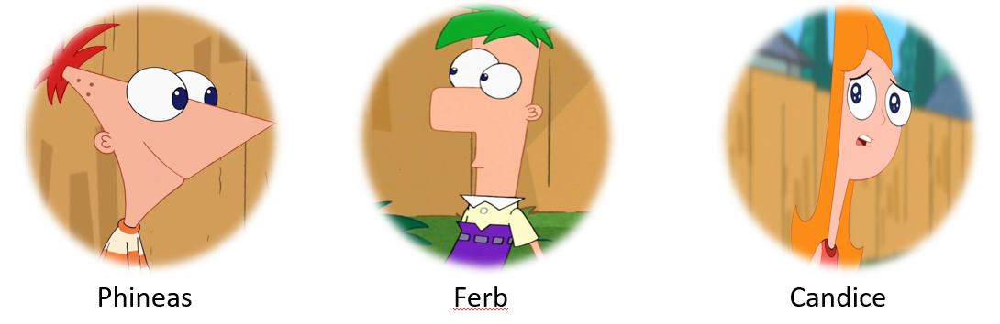

Perry The Platypus

- Family: Flynn-Fletcher
- Job: Secret Agent
- Animal: Platypus
- Insta: perrytheplatypus.daily
- Enemy: Dr Heinz Doofenshmirtz
- Gender: Male
- Color:Perry teal
- House:
Description
Perry is a greenish platypus with tangerine yellow webbing only on his hind legs. He also has three dark hairs on his head, a low, long orange beaver tail, dark brown eyes in an unnatural wall-eye stance, which make him look stupidly stupid, and a duck card to match the color of his web. Underneath his fur, he also has a pendant that looks like his webbed feet that shows three pictures of him and his owners, Phineas and Ferb. When Perry is no longer hidden, he stands on his hind legs, the his front legs look like hands and he wears a brown fedora that agents wear as a "spy uniform".
Family
Job

His nemesis is Dr. Heinz Doofenshmirtz. Perry's mission is almost always foiling the doctor's plans, which he successfully accomplishes almost every time even with minimal details about the plans. Typically, during these missions, his battle with Dr. Doofenshmirtz unintentionally cleans up whatever Phineas and Ferb have been working on that day.